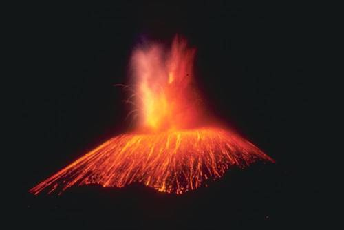
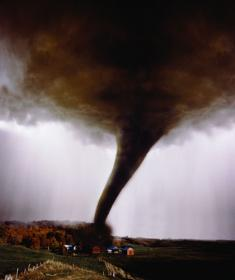
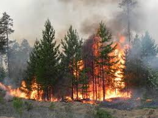
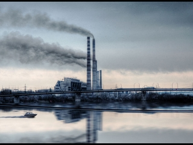
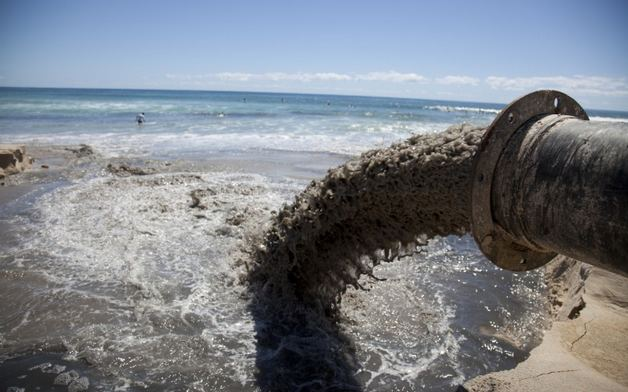
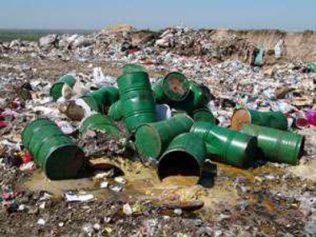

МЕНЮ:
Опираясь на данные всемирной организации здравоохранения за 2014-2015 года, ежогодно в мире около 4 млн человек умирает из-за загрязнения атмосферного воздуха. По данным ВОЗ загрязние воздуха является главнй причиной онкологических заболеваний.
К природным относятся те, которые происходят из-за самой природы. То же извержение вулкана явлеяется загрязнением атмосферы.
  Искусственное загрязнения атмосферы является основным источником загрязнения.
  